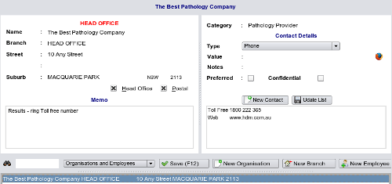

Setting up Providers
A Provider is defined as an entity - be it an organisation or a person - who supplies services to your practice.
Many sections of EasyGP (such as referrals, the document inbox, or request ordering), will not function without you
setting up the providers of services to your practice.
In EasyGP you are not allowed to enter the name of a provider as free text when ordering requests etc.
Example - Setting up Providers for the Requests Section
Before you can use the requests section you need to enter in the contacts database, the names, and addresses
of the companies to whom you will be sending your requests.
Every contacts entry must be allocated to a category, and in EasyGP there is a special category, that of a 'Provider'. This is
discussed in detail in
Allocating Categories.
Whilst entering this data, if you allocate your pathology companies to 'Pathology Provider',
then you will have automatic access to their details, similarly for 'Cardiology Provider' or 'Physiotherapy Provider' -
and you can even make up your own categories of providers.
These entities are entered in the
Other Contactssection.

Default Providers
Each staff member may wish to have a different default provider for a service, so these must be individually set up in the
Practice Staff section of the contacts database manager.
Once all this is completed, then in any section needing to access the contacts database you will be able to select the provider
of your choice.